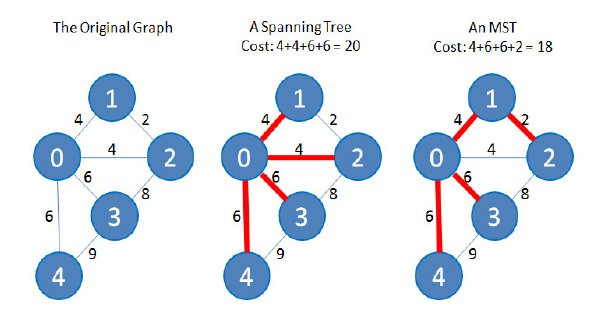

A árvore geradora mínima, em inglês, minimal spanning tree (MST), de um grafo G é um subconjunto de arestas de G que definem uma árvore geradora (uma árvore que contenha todos os nós de G) e possui a soma mínima das arestas escolhidas.
Eis um exemplo (tirado do livro do Halim):

Se o grafo G tem V nós, a MST(G) terá de ter V-1 arestas.
O seguinte método usa o algoritmo de Kruskal que faz o seguinte:
1. cria uma floresta F (um conjunto de árvores) em que cada nós do grafo é uma árvore separada
2. cria um conjunto S com todas as arestas do grafo
3. enquanto S não é vazio e a floresta F não é apenas uma árvore geradora:
a. remove a aresta de S com peso mínimo
b. se esta aresta conecta duas árvores separadas, juntar as duas árvores numa só
A junção dos elementos disjuntos vai ser realizado pelo algoritmo de Union-Find que já falámos noutra sessão (e que está disponível no moodle).
Em Java:
/**
* Computes a minimum spanning tree of this graph using Kruskal's Algorithm
* Cf. https://en.wikipedia.org/wiki/Kruskal's_algorithm
* @complexity O(E log V)
* @requires an undirected graph
* @return a set of edges inside an int[].
* Eg, if the result was 1->2 and 2->4, it returns [1,2,2,4]
*/
public int[] minimumSpanningTree() {
ArrayList<Integer> l = new ArrayList<Integer>();
Union_Find uf = new Union_Find(size);
int[] edges = sortEdgesByWeight();
for(int i=0; i<edges.length; i+=2)
if (uf.findSet(edges[i]) != uf.findSet(edges[i+1])) {
l.add(edges[ i ]);
l.add(edges[i+1]);
uf.union(edges[i], edges[i+1]);
}
return list2array(l);
}
// Auxiliary class that creates a comparable edge
// Useful to use Collection.sort()
@SuppressWarnings("rawtypes")
private class Triple implements Comparable {
int from, to;
Integer weight;
public Triple(int f, int t, int w) {
from = f; to = t; weight = new Integer(w);
}
@Override
public int compareTo(Object obj) {
return weight.compareTo(((Triple)obj).weight);
}
}
// returns the edges sorted by weight (increasing) in an int[]
// eg, if 1-{2}->3 and 0-{1}->4, the result is [0,4,1,3]
@SuppressWarnings("unchecked")
private int[] sortEdgesByWeight() {
ArrayList<Triple> l = new ArrayList<Triple>();
for(int row=0; row<size; row++) // copy all non-zero edges to list
for(int col=0; col<row; col++) {
int w = weight(row,col);
if (w!=0)
l.add(new Triple(row,col,w));
}
Collections.sort(l);
int[] result = new int[2*l.size()]; // translate list of Triples to int[]
int i = 0;
for(Triple t : l) {
result[i++] = t.from;
result[i++] = t.to;
}
return result;
}
O método seguinte é útil para calcular o custo da MST:
/**
* Compute the cost of the minimum spanning tree
* @param edges array of indexes. Eg, if MST is 1->2 2->3, edges=[1,2,2,3]
* @return the cumulative cost of all given edges
*/
public int costMST(int[] edges) {
int sum=0;
for(int i=0; i<edges.length; i+=2)
sum += weight(edges[i], edges[i+1]);
return sum;
}
Leiam o capítulo 4.3 do livro do Halim para mais informação sobre este algoritmo.
Problemas relacionados: